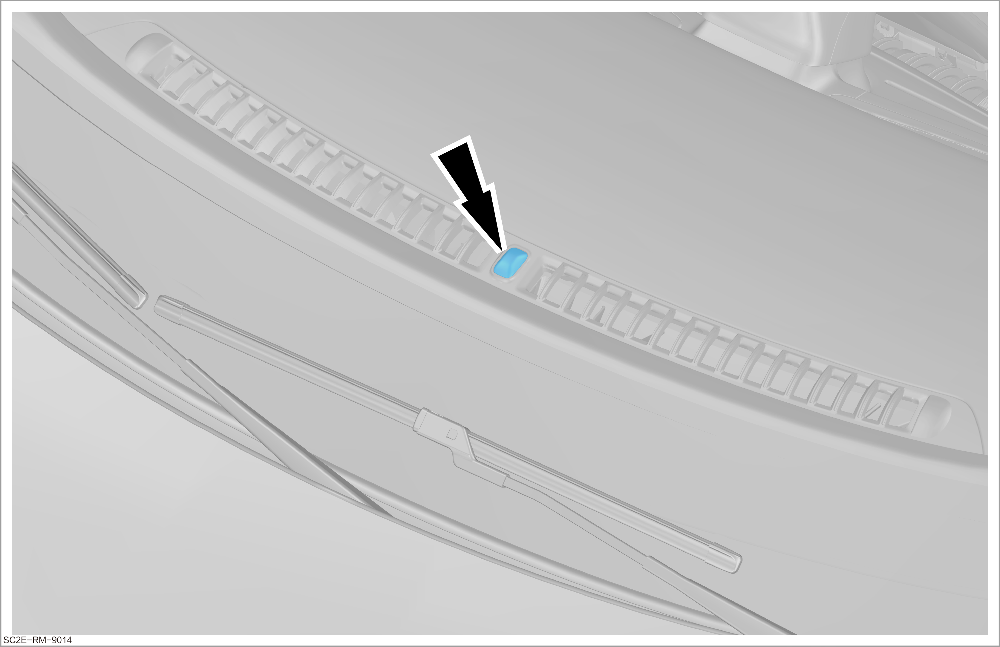

Inspection of Automatic Control Function of Low Beam

The light intensity sensor is located in the front center of the instrument panel. Do not cover the sensor or do not splash liquid on it.

The automatic control of the low beam is also called auxiliary running light.
Inspection steps
-
Park the vehicle in a bright environment.
-
Power on the vehicle (OK mode).
-
Turn the knob at the end of the light switch to the automatic lighting mode. At this moment, the clearance lights and low beams are off, indicating that the automatic lighting control function is normal.
ReminderBCM collects the brightness value of the light intensity sensor and automatically controls the on/off of clearance lights and low beams.
-
Cover the light intensity sensor with a hand or a suitable shading object. At this moment, the clearance lights and low beams light up automatically, indicating that the automatic lighting control function is normal.
-
If the automatic lighting control function is abnormal, please carry out relevant repairs.
 -
-
Obtain a new work order for repair or replacement.